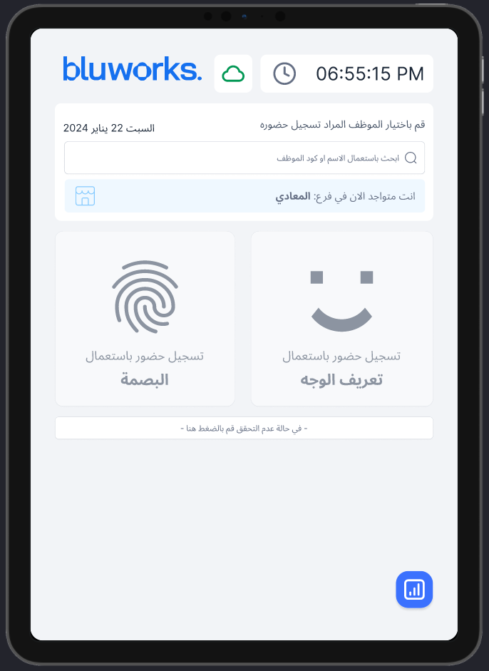
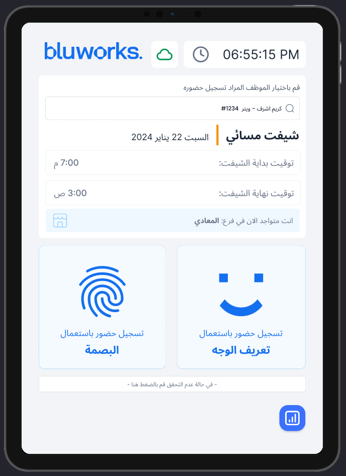
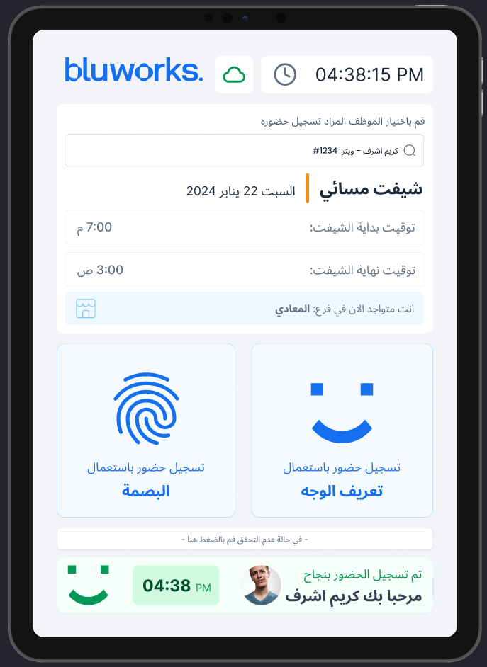
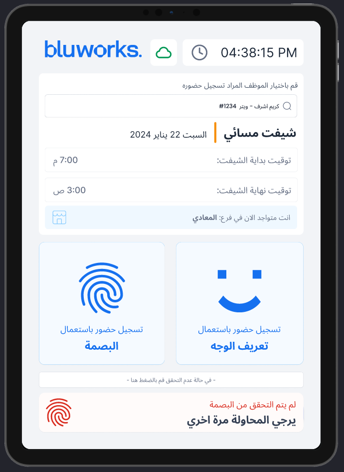
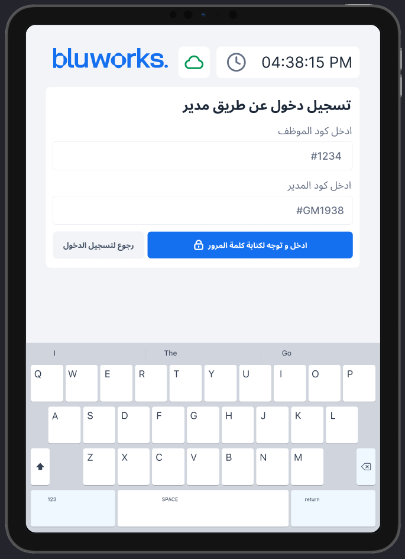
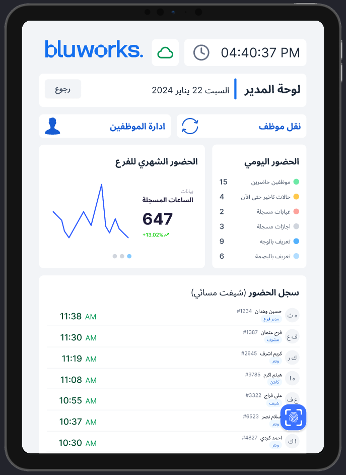

Let each company encode its own rules.
Configuration had to support client-specific policies without turning every customer request into a custom release.
Bluworks / B2B HR SaaS / 2023 to 2024
Office teams needed a configurable web platform for company-wide operations. Frontline workers needed a shared tablet they could use in seconds. Treating those as separate product contexts made both experiences clearer.

01 / Executive summary
Bluworks manages scheduling, attendance, leave, loans, payroll, and employee operations for companies with different policies. My work ran across two tracks. The first made variation manageable through configuration. The second rebuilt clock-in for a shared tablet in an operational environment, where privacy, speed, identity, and failure recovery mattered more than feature breadth.
Configuration had to support client-specific policies without turning every customer request into a custom release.
The tablet served many workers in sequence, often for only a few seconds, with biometric and manager-assisted fallbacks.
I worked across task entry, policy configuration, daily operations, clock-in flows, manager mode, prioritization, and handoff artifacts.
The fixed-device work responded to client safety and operational concerns and helped reopen sales opportunities while retaining relevant functionality.
02 / Context split
HR staff and managers needed to inspect, configure, and operate across a whole organization. The interface had to reveal system depth without forcing people to reconstruct the policy behind each number.
The interface had to protect identity, keep the next action obvious, recover from biometric failure, and reset safely for the next person in line.
A fixed tablet is not a responsive version of the office product. The unit of use changes from one person to a queue of people.
03 / Track A
The web platform had to support different organizational structures and policies across loans, holidays, payroll, attendance, approvals, cost centers, and employee files. I focused on the connection between the rule a company sets and the working view a manager uses every day.
A task-led landing view helped managers answer what they needed to review before navigating the product structure.
Loan policy settings and the active-loans table were designed as two sides of the same module, so the rule and its consequence stayed connected.
Progress, balances, filters, employee states, and upcoming actions were visible without requiring a separate policy document.


04 / Track B
The shared tablet needed to support fast employee selection, biometric clock-in, explicit success and failure, a manager-code fallback, and a separate managerial mode. The design kept the employee flow short while giving operations teams the visibility and recovery tools they needed.
Biometric options remain inactive until an employee is selected, preventing ambiguous input on a shared device.
Success and failure states state what happened, who it happened for, and what to do next.
A manager-assisted path handles cases where biometrics fail without leaving the worker at a dead end.
Manager mode surfaces attendance status, exceptions, and biometric enrollment without crowding the clock-in flow.






05 / What this demonstrates
All interface material on this page comes from my public UXcel showcases. The sales-opportunity statement is intentionally unnumbered. Figures visible inside dashboard mockups are demo data, not claimed outcomes.